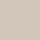

Easy kuchnia to bardzo dobra farba do renowacji mebli kuchennych z drewna pokrytego farbą lub lakierem. Przeznaczona także do renowacji blatów oraz płytek ściennych. Aplikacja bezpośrednio na podłoże bez usuwania starych powłok bez warstwy podkładowej. Odporna na częste mycie, płyny do mycia naczyń czy środki czystości. Powłoka odporna na zaplamienia kuchenne (tłuszcze sosy, napoje). Do stosowania w wewnątrz pomieszczeń.
Faba Easy renowacja Kuchnia

Produkt do renowacji mebli i blatów kuchennych, płytek oraz ściennych.
CENY:
0,75l / 50 zł
2l / 100 zł
Kolory

Biały

Bawełna

Jasny szary

Cynamon

Stal nierdzewna metaliczny

Taupe

Szary loft

Antracyt

Czarny mat

Morski turkus
Właściwości i przeznaczenie
Wykończenie: SATYNA, MAT, METALICZNY
Czas między warstwami: 6H
Wydajność: 12M2
Pojemność: 0,75L, 2L
Czyszczenie narzedzi: WODA
Zastosowanie
Przygotowanie podłoża
Przygotowanie podłoża jest niezbędnym etapem prac. Należy dokładnie umyć i odtłuścić powierzchnię. Elementy tłuste lub łuszczące się mogą zmniejszyć przyczepność farby.
- drewno lakierowane, malowane i melamina: dokładnie umyć i odtłuścić, spłukać obficie czystą wodą, pozostawić do wyschnięcia, a następnie delikatnie przeszlifować papierem ściernym (240) i odpylić
- laminaty, płytki ścienne oraz szkło: dokładnie umyć i odtłuścić, spłukać obficie czystą wodą, pozostawić do wyschnięcia.
- surowe / porowate powierzchnie (drewno, mdf): delikatnie przeszlifować papierem ściernym i odpylić. Na surowy dąb lub kasztan należy zastosować odpowiedni podkład w celu zablokowania taniny
Porady
- Do pielęgnacji pomalowanej powierzchni należy używać łagodnych detergentów. Nie używać szorstkich gąbek.
- Pełne właściwości i odporność powłoka uzyskuje po 20 dniach, do tego czasu należy chronić powierzchnię przed uderzeniami, zaplamieniem i czyszczeniem.
- W przypadku niektórych kolorów lub kontrastującego podłoża może być konieczne nałożenie dodatkowej warstwy farby.
- Nie nanosić poprawek podczas wysychania farby.
- Do stosowania wewnątrz pomieszczeń.
Aplikacja
Zalecana temperatura malowania: 12°C-25°C. Unikać malowania w przeciągach.
- Dodaj całą zawartość Additiv System do farby (dodatek znajduje się pod wieczkiem, w kuwecie malarskiej wewnątrz opakowania). Dokładnie mieszaj farbę przez ok. 5 minut, sięgając mieszadłem do dna pojemnika.
- Malować etapami. Jednorazowo nie nakładać farby na zbyt dużą powierzchnię. Farbę nakładać metodą krzyżową, ostatnie pociągnięcia wykonując w jednym kierunku. Pozostawić do wyschnięcia na 6 godzin, a następnie nałożyć drugą warstwę w ten sam sposób. Nie nanosić poprawek podczas wysychania farby.
- powierzchniach poziomych farba powinna być zabezpieczona Lakierem do blatów kuchennych 3V3.
- Po wymieszaniu z dodatkiem farba powinna być zużyta przed upływem 10 dni, aby zachować najwyższą przyczepność i odporność.